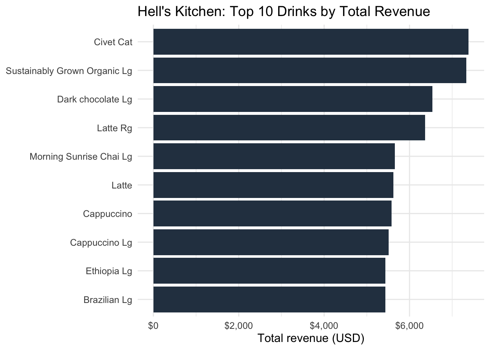

Rows: 149116 Columns: 11
── Column specification ────────────────────────────────────────────────────────
Delimiter: ","
chr (5): transaction_date, store_location, product_category, product_type, ...
dbl (5): transaction_id, transaction_qty, store_id, product_id, unit_price
time (1): transaction_time
ℹ Use `spec()` to retrieve the full column specification for this data.
ℹ Specify the column types or set `show_col_types = FALSE` to quiet this message.
ggplot(top10, aes(x = total_revenue, y = product_detail)) +geom_col(fill ="#2C3E50") +scale_x_continuous(labels = scales::dollar_format(prefix ="$")) +labs(title ="Hell's Kitchen: Top 10 Drinks by Total Revenue",x ="Total revenue (USD)",y =NULL ) +theme_minimal(base_size =12)

Figure 1: top 10 drinks by total revenue (hell’s kitchen)
As shown in Figure 1, total revenue in Hell’s Kitchen is concentrated among a small set of drinks, with a clear drop-off after the top-ranked items. The highest-earning products include premium coffees and larger-size beverages, suggesting that both higher unit prices and steady demand contribute to revenue. This figure highlights the key drivers of takings and provides an evidence-based starting point for deciding which drinks should be prioritised for menu placement and promotion.
Table 1: top 10 drinks by total revenue (hell’s kitchen)
drink
total_quantity
total_revenue
Civet Cat
164
7380.00
Sustainably Grown Organic Lg
1543
7329.25
Dark chocolate Lg
1452
6534.00
Latte Rg
1498
6366.50
Morning Sunrise Chai Lg
1413
5652.00
Latte
1500
5625.00
Cappuccino
1487
5576.25
Cappuccino Lg
1297
5512.25
Brazilian Lg
1552
5432.00
Ethiopia Lg
1552
5432.00
Table 1 highlights that the Civet Cat generated the highest total revenue in Hell’s Kitchen ($7,380), followed by Sustainably Grown Organic Lg ($7,329.25) and Dark chocolate Lg ($6,534). Brazilian Lg and Ethiopia Lg also performed strongly ($5,432 each), suggesting consistent high earners.
Table 2: top 10 drinks by total quantity sold (hell’s kitchen)
drink
total_quantity
total_revenue
Ouro Brasileiro shot
1854
5056.20
Serenity Green Tea Rg
1601
4002.50
Morning Sunrise Chai Rg
1589
3972.50
Brazilian Lg
1552
5432.00
Ethiopia Lg
1552
5432.00
Our Old Time Diner Blend Sm
1550
3100.00
Sustainably Grown Organic Lg
1543
7329.25
English Breakfast Lg
1529
4587.00
Earl Grey Rg
1522
3805.00
Brazilian Sm
1520
3344.00
Table 2 shows that the Ouro Brasileiro shot was the most popular item (1,854 units), followed by Serenity Green Tea Rg (1,601) and Morning Sunrise Chai Rg (1,589). Brazilian Lg, Ethiopia Lg, and Sustainably Grown Organic Lg appear as both high-volume sellers and high-revenue items, making them strong Core Menu choices.
Discussion
Conclusion
Tables Table 1 and Table 2 together identify the best menu candidates by combining profitability and demand. Items near the top of both tables are strong “core menu” choices because they sell frequently and generate high total revenue, making them reliable for day-to-day operations. Drinks that rank highly in Table 1 but not Table 2 likely achieve revenue through a higher price point; these are good premium offerings to keep for margin and upselling, but they may require targeted promotion and careful stock planning. Conversely, drinks that are very popular in Table 2 but lower in Table 1 are dependable volume sellers and can be used as anchors for bundles or add-ons. Overall, a balanced menu should prioritise overlapping winners, then supplement with a small set of premium specials.
Recommendations
The new cafe should be opened in Hell’s Kitchen.
Profits can be optimised by combining profitability and demand of drinks when choosing menu options.
Drinks for the menu should be chosen from those which can be identified in Table 1 and Table 2